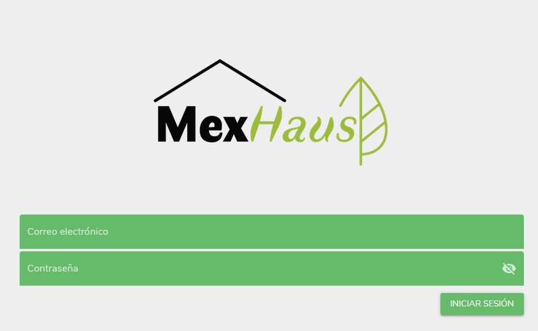

My first hands-on professional experience, I was given the opportunity to apply my very basic knowledge from university and turn it into real software for customers as a full-stack web engineer.
Here I worked on user interfaces and user experience, creating web services to track warehouse inventory, generate reports, update/download information from databases into .csv files and even automated e-mail reports, learning a lot.

Welcome page of one of the 6 projects I worked on during my time at Wasp.mx.
Since a better opportunity was given by Continental AG I decided to quit working with the company, although I'm forever grateful that they trusted me in joining them and allowing me to grow.